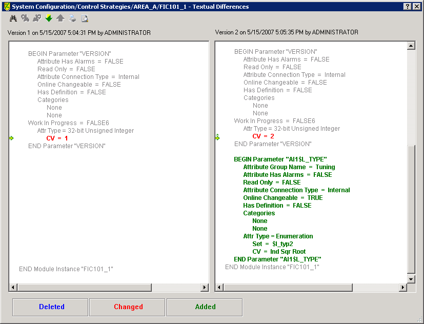
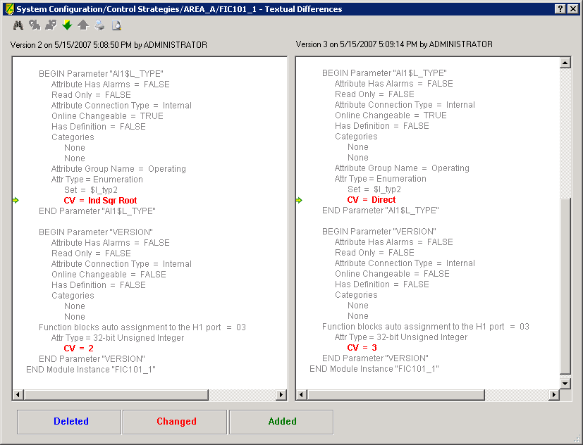
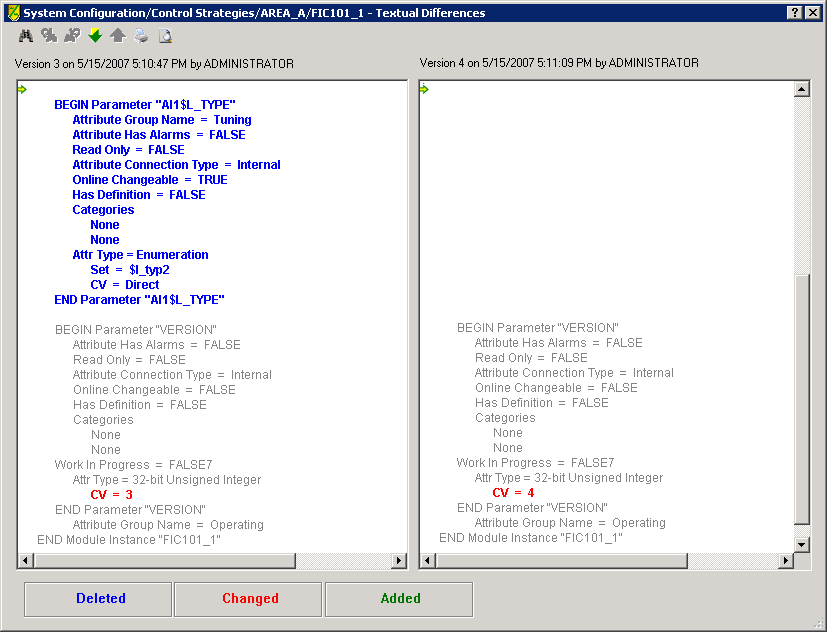

History for class-based modules and linked composites
The values in class-based modules and linked composite modules are derived from objects in the DeltaV Explorer library. After creating these module types from the library objects, users typically modify them to suit a specific control need. Such modifications are tracked in version control history.
Class-based modules and linked composite modules also enable users to reset parameter values to the original values of the library objects. The Use default value from library object check box resets a value to the value of the associated library object. This check box is available for the editable parameters in the class-based module instance or linked composite.
Note how version control history indicates changes resulting from the Use default value from library object check box: resetting a parameter value in this way simply removes the information about the parameter from the history view of the associated version of the object.
For example, L_TYPE is a configurable parameter in the instance of a module class. If you change the L_TYPE of the AI block in the module instance by manually editing the properties of the parameter, version control history adds this change to the history because the value is no longer derived from the class. The differences viewed from history would look similar to the following:

L_TYPE now has an override value because it is not derived from the class. A subsequent change to the override value of L_TYPE would look similar to the following:

If the value of L_TYPE is reset using the Use default value from library object check box, the history for L_TYPE is deleted for the instance. The L_TYPE parameter itself has not been deleted from the instance, but the value is now derived from the library default rather than from an override in the instance.

When a parameter is actually deleted from a class or composite block, VCAT history indicates this in the same way. To determine if the deleted information is the result of reverting to a library value or a deletion of a parameter in the class or linked composite, you must look at the history for the class or linked composite rather than the instance.